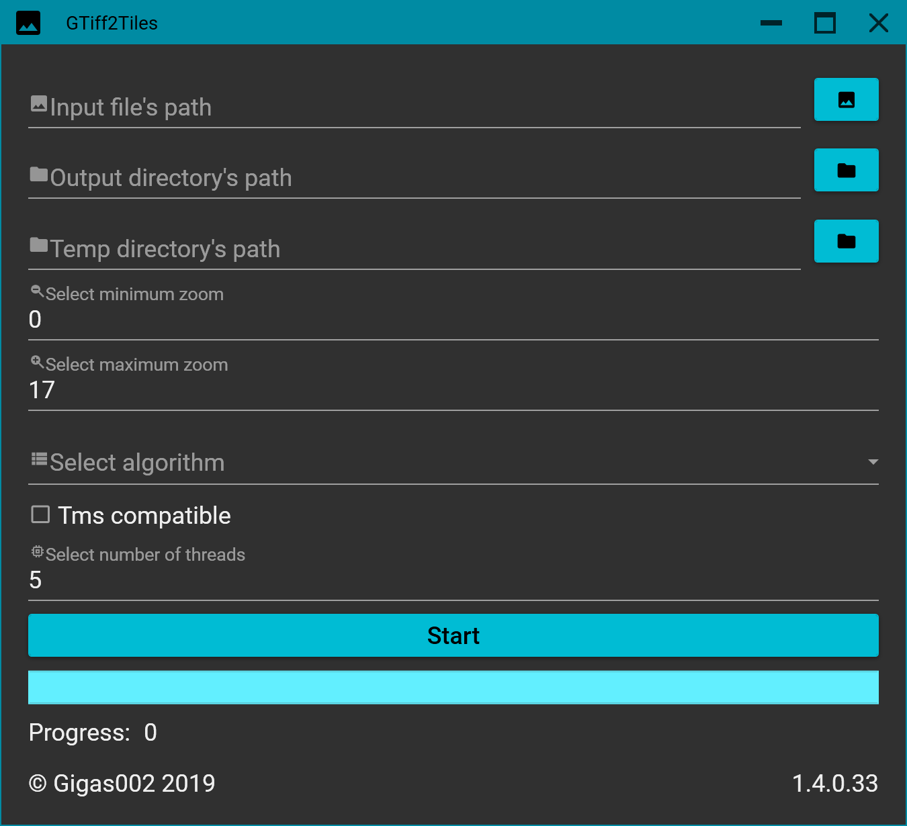

GTiff2Tiles.GUI
GTiff2Tiles.GUI is a simple GUI app, that implements methods from GTiff2Tiles.Core to create tiles. The app is available to download from GitHub Releases Page.
Supports only GeoTIFF as input data and creates geodetic or mercator tiles on output in tms or non-tms (Google maps like) structure. Any GeoTIFF (with less, than 5 bands) on input is supported, if it's not EPSG:4326 or EPSG:3857, it'll be converted to your selected target coordinate system and saved inside temp directory before cropping.

Requirements
Application runs only on Windows x64 (tested on Win 7 SP1+) operating system.
If you’re using Windows 7 SP1, you can experience weird error with GDAL package. It’s recommended to install KB2533623 to fix it. You can read about this Windows update on MSDN.
Build dependencies
- GTiff2Tiles.Core;
- Prism.DryIoc – 8.0.0.1740-pre;
- MaterialDesignColors – 1.2.6;
- MaterialDesignThemes – 3.1.3;
- MaterialDesignExtensions – 3.2.0;